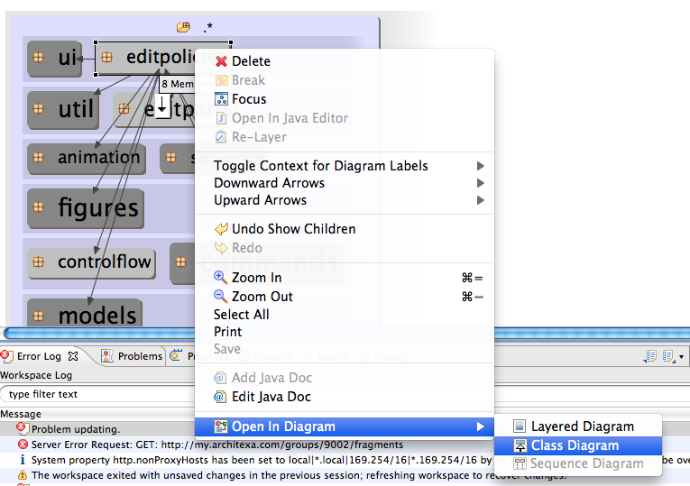

Understand new code
Getting up to speed when working on relatively unfamiliar code can be hard. Architexa allows you to quickly generate helpful diagrams to start from an overview of the code and then dive into the details of it.Getting a High Level view
- Right Click on a project or jar file in the package explorer
- Select Open In Layered Diagram

- Now you will see the top level packages containing source code.
- Mouse over each package and notice the following:
- Its size relative to other packages, indicating the amount of code contained in it.
- Connections going to/from it and their size (indicating the strength of the dependency)
- The number of items it contains: found in the tooltip or 'more' button
- The relative position of packages. Packages in the top layers depend on those below

- Double click on the largest package or package that appears to contain the most relevant code.
- Repeat steps 4 and 5 while using the substeps of step 4 to draw conclusions about the codebase.
- If you notice something about the architecture, dependencies, or structure of the code that seems interesting save the diagram so you can share your insight with others.
Diving into details
- Once you find some particular class(s) or package in the Layered diagram that you would like to learn more about, right click on it and select 'Open in Diagram' -> 'Class Diagram'
 - You can now explore the relationships of this class(s). Try the following:
- Click and add items from the up and down arrow buttons to see inheritance and hierarchy relationships.
- Add methods and fields from the class's more button
- Add callers/callees of specific methods by selecting a method and clicking on the left and right arrows and adding items in the menu.

- You can also double click on any method or class to view the corresponding source code
- Based on initial explorations, determine which classes and methods seem the most important or relevant.
- Remove classes and methods that no longer appear relevant.
- Add more connections, classes, and methods to expand your understanding of the relationships involving relevant classes and methods.
- Save the diagram for use and improvement by others once you have created something describing the concept you are concerned with.
- If your diagram contains a lot of method calls and you want to better understand the order of calls and the logic of loops contained within then right click on the method or class and open in a sequence diagram. See Sequence Diagram for more information.
---- Your question not answered? Send an email to support@architexa.com ----